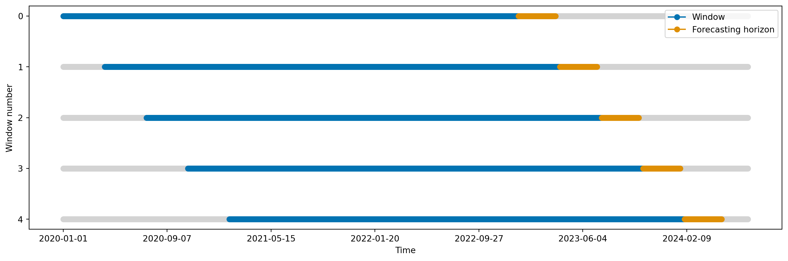
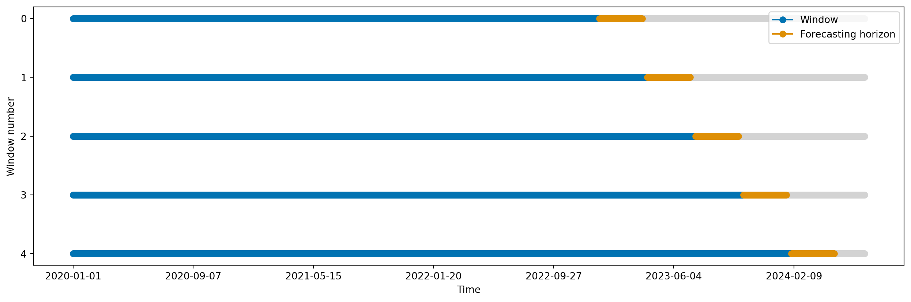

import matplotlib.pyplot as plt
from tsbook.datasets.retail import SyntheticRetail
from sktime.utils.plotting import plot_series
from sktime.forecasting.naive import NaiveForecaster
dataset = SyntheticRetail("univariate")
y_train, y_test = dataset.load("y_train", "y_test")
# Predict
model = NaiveForecaster(strategy="last")
model.fit(y_train)
y_pred = model.predict(fh=y_test.index)5 Métricas e cross-validation
Até então, vimos como criar modelos de séries temporais e avaliamos qualitativamente seu desempenho, em apenas uma simples divisão treino-teste. Agora, vamos explorar como avaliar modelos de séries temporais de forma mais robusta, utilizando métricas específicas e técnicas de validação cruzada adaptadas para dados temporais.
5.1 Métricas
Primeiro vamos baixar os dados e criar um modelo simples.
Para avaliar o desempenho de modelos de séries temporais, existem diversas métricas que podem ser utilizadas.
Duas métricas básicas são:
- Mean Absolute Error (MAE): Média dos erros absolutos entre as previsões e os valores reais. \[ MAE = \frac{1}{h} \sum_{t=T+1}^{T+h} |y_t - \hat{y}_t| \]
from sktime.performance_metrics.forecasting import MeanAbsoluteError
metric = MeanAbsoluteError()
metric(y_true=y_test, y_pred=y_pred)np.float64(614.9555555555555)- Mean Squared Error (MSE): Média dos erros quadráticos entre as previsões e os valores reais.
\[ MSE = \frac{1}{h} \sum_{t=T+1}^{T+h} (y_t - \hat{y}_t)^2 \]
from sktime.performance_metrics.forecasting import MeanSquaredError
metric = MeanSquaredError()
metric(y_true=y_test, y_pred=y_pred)np.float64(633516.4555555555)No entanto, essas métricas não levam em consideração a escala dos dados, o que pode ser um problema ao comparar desempenho entre diferentes séries temporais, e também na comunicação dos resultados para stakeholders.
Em muitos meios, é comum usar métricas que eliminam o fator escala, como:
- Mean Absolute Percentage Error (MAPE): Média dos erros percentuais absolutos entre as previsões e os valores reais.
\[ MAPE = \frac{1}{h} \sum_{t=T+1}^{T+h} \left| \frac{y_t - \hat{y}_t}{y_t} \right| \]
from sktime.performance_metrics.forecasting import MeanAbsolutePercentageError
metric = MeanAbsolutePercentageError()
metric(y_true=y_test, y_pred=y_pred)np.float64(0.21289989268196857)- Symmetric Mean Absolute Percentage Error (sMAPE): Média dos erros percentuais absolutos simétricos entre as previsões e os valores reais.
metric = MeanAbsolutePercentageError(symmetric=True)
metric(y_true=y_test, y_pred=y_pred)np.float64(0.22352456623275035)\[ sMAPE = \frac{1}{h} \sum_{t=T+1}^{T+h} \frac{|y_t - \hat{y}_t|}{(|y_t| + |\hat{y}_t|)/2} \]
Essas métricas, no entanto, apresentam seus próprios problemas. Note que os valores podem ser exageradamente alto quando o denominador é próximo de zero. Ou seja, o MAPE e sMAPE podem ser problemáticos quando a série temporal contém valores próximos de zero.
Outro tema é que essas métricas não consideram a dificuldade da série. Por exemplo, 5% de erro pode ser muito em uma série, e pouco em outra. Para isso, foram propostas métricas “escalas”:
- Mean Absolute Scaled Error (MASE): dividimos o erro absoluto pelo erro absoluto médio de um naive nos dados de treino. Se:
\[ e_{naive} = \frac{1}{T-1} \sum_{t=2}^{T} |y_t - y_{t-1}| \]
são os erros nos dados de treino, então:
\[ MASE = \frac{1}{h} \sum_{t=T+1}^{T+h} \frac{|y_t - \hat{y}_t|}{e_{naive}} \]
from sktime.performance_metrics.forecasting import MeanAbsoluteScaledError
metric = MeanAbsoluteScaledError()
metric(y_true=y_test, y_pred=y_pred, y_train=y_train)np.float64(10.123559926834387)- Mean Squared Scaled Error (MSSE): dividimos o erro quadrático pelo quadrado de \(e_{naive}\).
\[ MSSE = \frac{1}{h} \sum_{t=T+1}^{T+h} \frac{(y_t - \hat{y}_t)^2}{e_{naive}^2} \]
from sktime.performance_metrics.forecasting import MeanSquaredScaledError
metric = MeanSquaredScaledError()
metric(y_true=y_test, y_pred=y_pred, y_train=y_train)np.float64(57.07280843131573)5.2 Cross-validation para séries temporais
Em um cross-validation, nossa intenção é estimar corretamente o erro de generalização do modelo, ou seja, o erro que o modelo terá em dados futuros.
\[ \mathbb{E}[L(Y, \hat{Y})] \]
Onde a média é sobre a distribuição que mais representa o que será visto em produção.
Tipicamente, fazemos back-testing com dois tipos de janelas:
- Sliding window: a janela de treino tem tamanho fixo, e “desliza” ao longo do tempo. A cada passo, o modelo é re-treinado com os dados mais recentes.
from sktime.utils.plotting import plot_windows
from sktime.split import SlidingWindowSplitter
sliding_window_cv = SlidingWindowSplitter(
window_length=365 * 3, step_length=100, fh=list(range(1, 90 + 1))
)
plot_windows(cv=sliding_window_cv, y=y_train)
plt.show()
- Expanding window: a janela de treino começa com um tamanho mínimo, e vai aumentando ao longo do tempo, incluindo todos os dados anteriores. A cada passo, o modelo é re-treinado com todos os dados disponíveis até aquele ponto.
from sktime.split import ExpandingWindowSplitter
expanding_window_cv = ExpandingWindowSplitter(
initial_window=365 * 3, step_length=100, fh=list(range(1, 90 + 1))
)
plot_windows(cv=expanding_window_cv, y=y_train)
plt.show()
Qual escolher? Bom, escolha o que mais representa o que você espera ver em produção.
5.3 Executando o cross-validation
Para executar cross-validation, usamos a função evaluate, que recebe o modelo, o esquema de cross-validation, os dados, e a métrica a ser usada.
from sktime.forecasting.model_evaluation import evaluate
from sktime.performance_metrics.forecasting import MeanAbsoluteScaledError
from sktime.forecasting.naive import NaiveForecaster
model = NaiveForecaster(strategy="last")
evaluate(
forecaster=model,
cv=expanding_window_cv,
y=y_train,
X=None, # Veremos na próxima seçao!
scoring=MeanAbsoluteScaledError(),
error_score="raise",
return_data=True,
)| test_MeanAbsoluteScaledError | fit_time | pred_time | len_train_window | cutoff | y_train | y_test | y_pred | |
|---|---|---|---|---|---|---|---|---|
| 0 | 12.834619 | 0.004345 | 0.010120 | 1095 | 2022-12-30 | sales date 2020-01-01... | sales date 2022-12-31... | sales 2022-12-31 458.0 2023-01-01... |
| 1 | 3.808715 | 0.003967 | 0.009625 | 1195 | 2023-04-09 | sales date 2020-01-01... | sales date 2023-04-10... | sales 2023-04-10 866.0 2023-04-11... |
| 2 | 8.057811 | 0.004040 | 0.009489 | 1295 | 2023-07-18 | sales date 2020-01-01... | sales date 2023-07-19... | sales 2023-07-19 748.0 2023-07-20... |
| 3 | 7.854351 | 0.003864 | 0.009340 | 1395 | 2023-10-26 | sales date 2020-01-01... | sales date 2023-10-27... | sales 2023-10-27 1229.0 2023-10-... |
| 4 | 5.956618 | 0.003974 | 0.009426 | 1495 | 2024-02-03 | sales date 2020-01-01... | sales date 2024-02-04... | sales 2024-02-04 1915.0 2024-02-... |